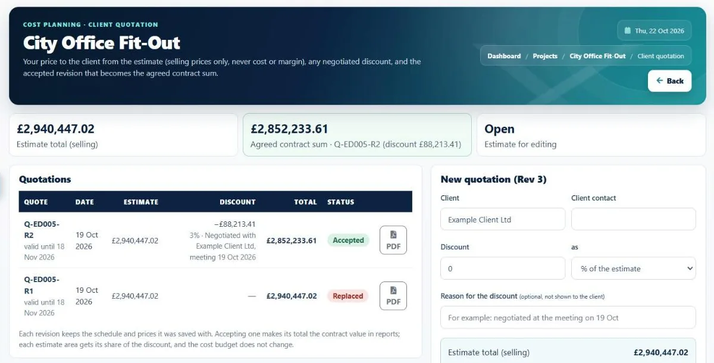

Construction estimating software
Construction estimating softwarethat starts from the client's BOQ.
Import the client's bill of quantities from Excel, or take quantities from a BIM model, price every item with real rates, add your margin and send the quotation, without retyping a single line.

The problem
Estimating eats the week,
and guesses creep in.
Retyping BOQs, copying rates from old jobs and building quotes by hand takes days, and every step is a chance for an error that comes straight off the margin.
The client's BOQ is retyped line by line into a spreadsheet.
The Excel or CSV BOQ is imported, with its areas and levels, and checked against its total.
Rates are copied from an old job, and nobody knows they are out of date.
Copied items are checked against what you have bought since, with the latest order price shown.
Quantities have to be measured again from the drawings or model.
Quantities come straight from an IFC model (beta), added up for you.
The quote is rebuilt in Word, and the agreed price is lost in email.
The quotation PDF comes from the estimate, and the accepted revision becomes the agreed sum.
Carbon figures are a separate job for someone else.
Each line can carry an embodied carbon factor from the same quantities.
The estimate changes after the budget is set.
The final estimate is locked as the approved budget, with every version kept.
In I-Cost
Import, price, quote,
lock.
Upload the BOQ, tell I-Cost what each column is, check the preview and the total, and save it to the estimate. Price each item at cost and selling rates, reuse rates from your library, and apply the project margin. When the client agrees, lock it as the budget.
- Excel / CSV BOQ import with total check
- BIM model import (IFC) Beta
- Cost and selling rates with margin
- Libraries and copy to estimate
- Price check on copied estimates
- Quotation PDF with discount
- Carbon on every line
- Locked final estimate and revisions

Step by step
How to price a BOQ
in I-Cost.
Import the BOQ
Upload the client's Excel or CSV file, or an IFC model, and pick the project it belongs to.
Map and check
Tell I-Cost which column is the item, quantity, unit and rate, and check the total matches the client's.
Price each item
Add cost rates from your library or past jobs; I-Cost flags copied rates that have changed since.
Add margin and send
Apply the margin and send the client a quotation PDF at selling prices only.
Lock the budget
When the price is agreed, lock the estimate as the approved budget for buying and reporting.
Spreadsheet or I-Cost
Why estimators move
off spreadsheets.
| Spreadsheet | I-Cost | |
|---|---|---|
| Getting the BOQ in | Retype or paste, check by eye | Import with a total check, areas and levels kept |
| Rates | Copied from the last job | Library rates, with a check against what you last paid |
| Client quote | Rebuilt in Word | PDF from the estimate, discount and agreed sum recorded |
| After the quote | A separate budget sheet | Locked as the approved budget for orders and reports |
| Carbon | Another spreadsheet | On every estimate line |
How do I price a BOQ in I-Cost?
Import the client's BOQ from Excel or CSV, check it against the total, add cost rates from your library or past jobs, apply the margin and send the quotation PDF. Copied rates are checked against what you have bought since.
Can I import my client's Excel BOQ?
Yes. Upload the Excel or CSV file, tell I-Cost what each column is, check the preview and the total, and bring the lines straight into the estimate. Nobody has to retype it.
Can I do quantity takeoff in I-Cost?
Yes, from a BIM model: import an IFC file (beta) exported from Revit, ArchiCAD, Tekla or similar, and I-Cost adds up the quantities, keeping the levels, in the same preview as a BOQ import.
Can AI estimate my construction project?
AI tools can help draft an estimate, but they do not know today's prices from your suppliers. I-Cost keeps your real supplier quotes and purchase order prices next to the estimate. Why real prices matter.
Is it suitable for subcontractors pricing a package?
Yes. Specialist and trade subcontractors import the main contractor's BOQ for their package, price it and send their quotation in the same way.
More of I-Cost
One platform for the whole job.
Everything below works together, from the same estimate. See the full platform.